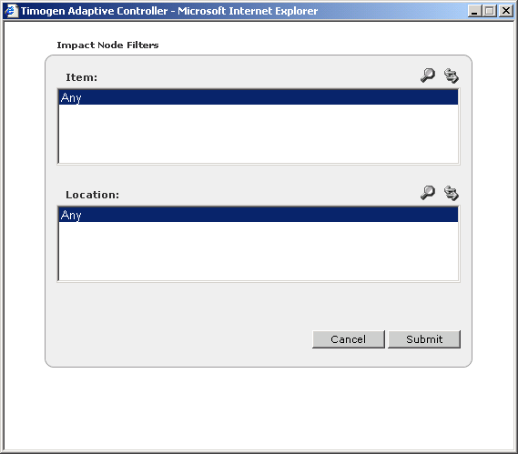

Filtering Impact Node Lists
The default view for Impact Node lists is to view all that you've subscribed to. If the list is long, it is separated into pages. You can filter any list to make it shorter and easier to find the records you are interested in.
To filter an
Impact Node
list
1 View the Impact Node list. (See "Viewing Impact Node Lists".)
2 Click  . The Impact Node Filters dialog box appears.
. The Impact Node Filters dialog box appears.
. The Impact Node Filters dialog box appears.
3 Select the filter criteria by selecting one or more items in each of the Item and
Location lists. To select multiple items, hold down the CTRL key while clicking.
Note: To view more records in the Items and Locations lists, click  , then find
and select one or more Items and Locations.
, then find
and select one or more Items and Locations.
4 Click Submit.